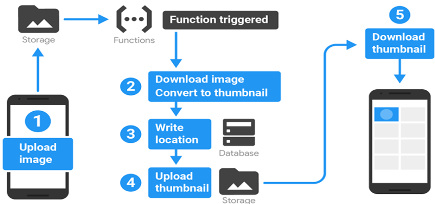

Firebase cloud Function
This new functionality allows you to create functions written in JavaScript, in a Node.js environment, which are invoked by Firebase events (When you write in the database, when a user is created, when a file is uploaded, etc).
This allows us to have a quite complete Backend as a Service solution with Firebase.
Cloud Functions are the next level when it comes to Cloud Computing. We would have 3 levels:
Infrastructure as a Service (IaaS):
Amazon EC2, Google Cloud Compute Engine, Digital Ocean.
Platform as a Service (PaaS)
Google Cloud App Engine, Heroku.
Functions as Service (FaaS)
Amazon Lambda, Google Cloud Functions, Cloud Functions for Firebase.
What can I do with the Cloud Functions?
We can send push notifications to our users' devices by joining Firebase Cloud Messaging and the database trigger that jumps when we write in a certain record, for example when a user has a new "follower":
Message filtering:
By joining the triggers of the database with the Cloud Functions again we can make it possible to write a message in a database registry, to "sanitize" it (remove HTML or malicious JS code, hide information such as emails or phone, etc ...) and write it "clean" in the database:
Image processing:
Combining Firebase Storage triggers with the database and the Cloud Functions, we can make each time a user upload an image to the Storage, download it, reduce it in size and place it back in Storage and write a record in the database. All with a function.
And many more that are triggered if you join the Machine Learning APIs that Google Cloud has (Vision, Video, Speech, Translate, etc.).
How do I create my first Cloud Function?
In order to create functions with Firebase, you need first of all to have installed Node.js and NPM on your computer in order to install the firebase-tools library:
This will allow us to use the firebase command in the terminal.
First we place ourselves in a directory of our team where we want to have our project and execute:
Finally we run the firebase init command with the functions option and we will create a firebase project ready to create functions:
And the generated file structure will be the following:
Once we have this, we start writing in the file myProject / functions / index.js.
The first thing we must add are the dependencies of firebase-functions and firebase-admin to be able to use the triggers that trigger the functions and have administrator access to the database of our project:
And an example of a function, following the official documentation of Firebase, would be to capitalize a text that is written in the database, that we could do it in the following way:
When writing to the database, in the / messages / {pushId} / original register, the onWrite event triggers the makeUppercase function that we export.
And then the function what it does is take the text, which comes in the object event.data.val (), pass it to uppercase and write it in the record / messages / {pushId} / uppercase since event.data.ref referenced to the record with which we define the trigger that is / messages / {pushId} / original and with .parent.child we go up and create a new child.
And with this it is basically the beginning of any function that we develop. Afterwards, the degree of complexity and the integration of bookstores will be lower or higher.